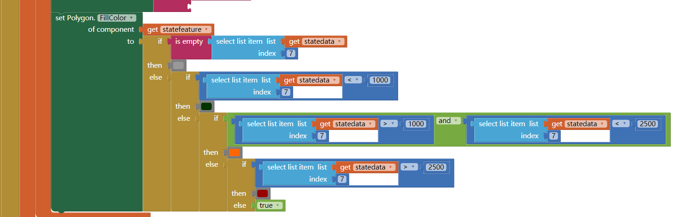

1)How and why are files used as a data abstraction in this app?
Files are used as a data abstraction to help your app to access to the data ,read the data and use it.
2)Explain the List of Lists data abstraction used in this app.
The list of Lists data abstraction used in this app is to help you get in to the list from the csv files column,and get the only one data from the column instead of the whole list.
3)When and why do programmers use APIs?
Programmers use APIs because it help you to access to the online engine,that would get your values that you send,and run the function that API do.They use it when they want to API to work for something in the app.
4)Provide screenshots of your enhancement projects. (At least ONE and TWO)
